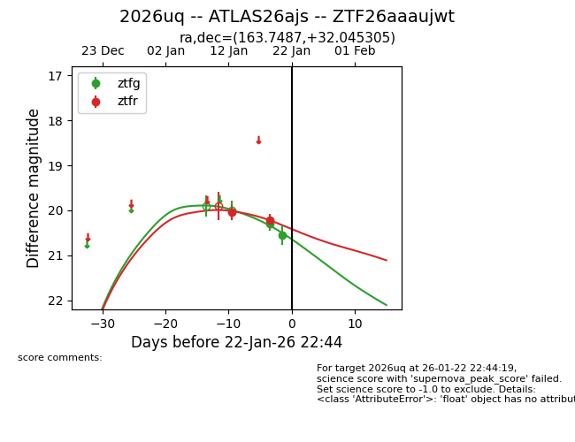
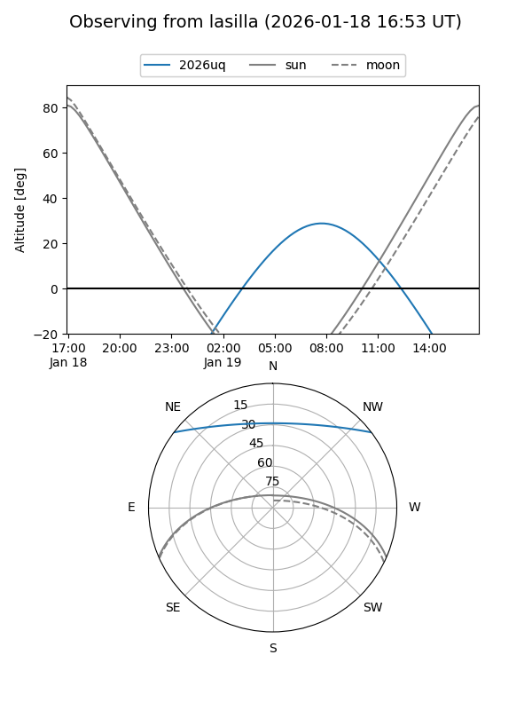
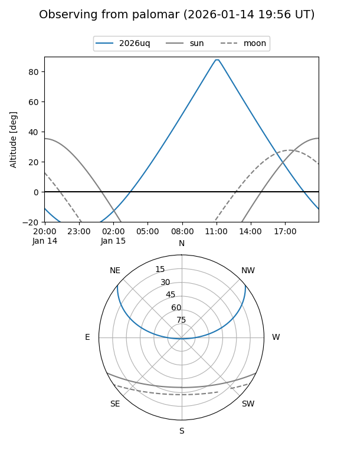
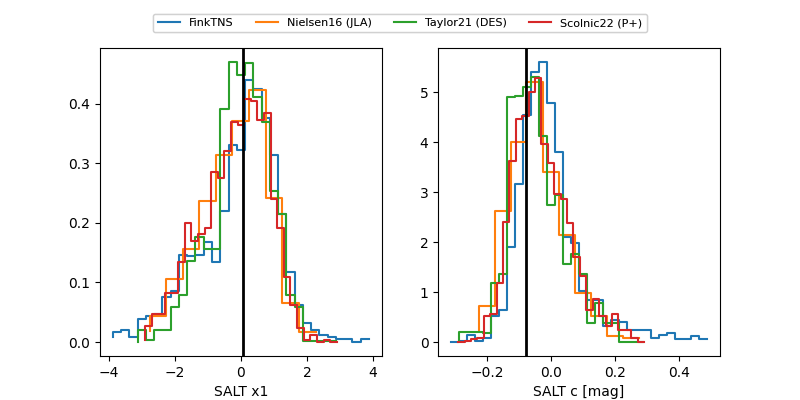

2026uq
Target 2026uq at 2026-01-16 07:32
Aliases and brokers:
FINK: link
Lasair: link
ALeRCE: link
TNS: link
YSE: link
alt names
ZTF26aaaujwt (ztf,fink_ztf)
2026uq (tns,yse)
ATLAS26ajs (atlas)
Coordinates:
equatorial (ra, dec) = 163.7487,+32.04530
equatorial (HMS+DMS) = 10:54:59.69,+32:02:43.10
galactic (l, b) = (194.8630,+64.29343)
Flags:
Photometry:
last ztfr=20.04
1 ztfr detections
Lightcurve

Visibility


Additional plots
